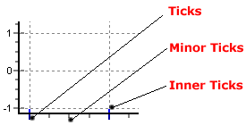
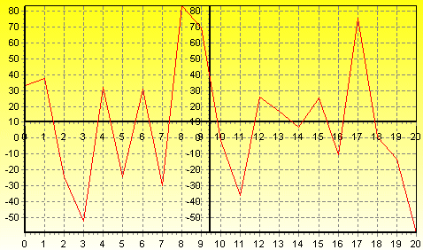
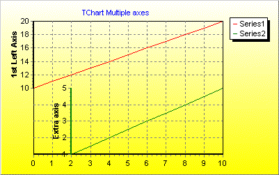

Previous | Next
|
|
Contents page Previous | Next |
TeeChart Pro will automatically define all Axis labelling for you and offers plenty of flexibility to tailor any specific requirements you may have. TeeChart Pro offers true Multiple Axes. These are available at design or run time and offer countless possibilities and flexibility for Axis definition. See the section in this tutorial for more information.
| Contents |
Axes control - Key areas
Scales Additional AxesCopying axesMultiple Custom axes (Pro version only) |
Axis scales are set automatically when you add Series data to your Chart. You may change from the defaults at design time by code or at runtime by using Axis methods.
When adding a new Series, the Axis scales will take the following default values: Scales Visible
and Automatic. You can override these settings and fix a MinMax to the Axis scale and alter incerement according to requirements.
Automatic selects the best axis scale range to fit your data. If you turn Automatic off, the Scales section will activate options and you can change Axis values. Important, remember to select the Axis that you wish to configure from the Axis list at the left of the page.
Add a Line Series to a Chart add a Command Button with the following code:
tChart1.removeAllSeries(); tChart1.addSeries(new Line()).fillSampleValues(40);
Running the code in the button will draw a Line Series with 40 random values. You may now configure Maximum and Minimum values for the Axis scale.
tChart1.getAxes().getBottom().setAutomatic(false); tChart1.getAxes().getBottom().setMaximum(36); tChart1.getAxes().getBottom().setMinimum(5);
Running the code again will show values depending on the values you configured for the Axis. Using the right button of of the mouse you may scroll to see the remaining values.
You may set Axis scale Maximum and Minimum to automatic individually. eg:
tChart1.getAxes().getBottom().setAutomaticMaximum(true); tChart1.getAxes().getBottom().setMinimum(5);
You may tailor the intervals for the Axis. Select the Desired Increment combobox from the Scales section of the Axis page and add the increment you require. You may change this by code at runtime:
tChart1.getAxes().getBottom().setIncrement(20);
Datetime data
If your data is datetime you may set the data to DateTime for your Series.E.g.
series.getXValues().setDateTime(true);
add some sample data
tChart1.getAxes().getBottom().setIncrement(Utils.getDateTimeStep(DateTimeStep.ONEDAY));
tChart1.getAxes().getBottom().getLabels().setDateTimeFormat("dd
MMM yyyy");
DateTime d = DateTime.getNow(); d.add(5,1);
tChart2.getSeries(0).add(d, 20); d.add(5,1);
tChart2.getSeries(0).add(d, 30); d.add(5,1);
tChart2.getSeries(0).add(d, 40); d.add(5,1);
tChart2.getSeries(0).add(d, 35);
Change the Increment at runtime:
tChart2.getAxes().getBottom().setIncrement(com.steema.teechart.DateTimeStep.ONEWEEK);
See the Axis.ExactDateTime method for more information about date axis labelling.
Note
When changing axis label frequency, bear in mind that TeeChart will avoid label overlap according to the setting of the LabelsSeparation method. This means that if the label frequency is too high for the labels to fit, then TeeChart will allocate 'best fit'. Changing the label angle and label separation are 2 options that may help you fit the labels you require. See the Labels section and LabelsAngle method.
Titles are set in the Titles section of the Axis page. You may change the Title text for the Axis and its font. The angle may be selected from values 0, 90, 180, 270 degrees. For runtime see the TChartAxisTitle Component.
Note
When changing axis label frequency, bear in mind that TeeChart will avoid label overlap according to the setting of the LabelsSeparation method. This means that if the label frequency is too high for the labels to fit, then TeeChart will allocate a 'best fit'. Changing the label angle and label separation are 2 options that may help you fit the labels you require. See the Labels section and the LabelsAngle method.
Label formats
You may apply all standard number and date formats to Axis labels. The Axis page, Labels section contains the field "Values format". If your data is datetime the field name changes to "Date time format". In the Editor drag the help "?" icon onto the field to get a full listing of options. at runtime use:
tChart1.getAxes().getBottom().getLabels().setValueFormat("#,##0.00;(#,##0.00)");
//or for Datetime data
tChart1.getAxes().getBottom().getLabels().setDateTimeFormat("dddd/mmmm/yyyy");
MultiLine labels
Axis labels can be displayed as multi-line text instead of a single line of text.
Lines are separated using the TeeLineSeparator global constant, which by default is the carriage-return ascii character ( #13 ).
//Add the Series labels in this way and apply 'Marks' as Axis labelling style tChart1.getSeries(0).add(1234, "New"+com.steema.teechart.Texts.LineSeparator+" cars", Color.Blue ); tChart1.getSeries(0).add(2000, "Old"+com.steema.teechart.Texts.LineSeparator+" bicycles", Color.Green); tChart1.getPanel().setMarginBottom(10);Example for DateTime labels:
 | There are 3 tick types. You can change the length, width and colour of each tick type. If the tick width is set to 1 (default) then you may change the style to one of several line types (dot, dash, etc.). Style will be ignored if width is greater than 1. |
tChart1.getAxes().getBottom().getTicks().setLength(7); tChart1.getAxes().getBottom().getTicks().setColor(Color.GREEN); tChart1.getAxes().getBottom().setMinorTickCount(10);
Axes have a method which modifies where each axis is to be located. In this example, the axis is moved to 50% of the total Chart width, so it is shown at the chart center:
tChart1.getAxes().getLeft().setRelativePosition(50);
TeeChart offers 5 axes to be associated with data Series: Left, Top, Bottom, Right and Depth. When you add a new series to a Chart you may define to which of the axes the Series should be related (Go to the Series tab, General page). You may repeat any one (or all) of the 4 front axes at any place on the Chart by using the Axis Customdraw method. Note that this method makes a copy of your Axis, it does not add a new Custom Axis.
//fill the Series for this example with random data procedure TForm1.BitBtn1Click(Sender: TObject); Var t:integer; begin For t := 0 To 20 do Series1.AddXY(t, Random(100) - Random(70), '', clRed); end; //Put this code in the OnBeforeDrawValues() event: procedure TForm1.Series1BeforeDrawValues(Sender: TObject); var posaxis :Integer; begin With Chart1 do begin If LeftAxis.Maximum > 0 Then begin //When scrolling or on zoom always keep the gridlines enclosed in the Chart rectangle Canvas.ClipRectangle(ChartRect); //Always draw the 2nd vertical Axis at the middle point of the Chart posaxis := (ChartRect.Left) + (ChartRect.Right - ChartRect.Left) div 2; LeftAxis.CustomDraw(posaxis - 10, posaxis - 20, posaxis, True); //Draw the 2nd Horizontal axis at the level of "10" on the vertical axis posaxis := (LeftAxis.CalcYPosValue(10)); BottomAxis.CustomDraw(posaxis + 10, posaxis + 40, posaxis, True); Canvas.UnClipRectangle; end; end; end;
 | Custom axes |
In this example, TeeChart will plot the New axes, one horizontal and one vertical in the centre of your Chart. When you scroll the Chart (dragging with right mouse button), the new vertical axis will always remain central to the Chart, the new horizontal axis will move up and down with vertical scrolling. The new axes are exact copies of the default axes.
Together with the PositionPercent and stretching properties, it’s possible to have unlimited axes floating anywhere on the chart. Scroll , zoom , and axis hit-detection also apply to custom-created axes. Creating extra axes is now possible both at designtime via the Chart Editor and at runtime via a few lines of code:
Via the Chart Editor
TeeChart offers you the ability to create custom axes at designtime enabling
them to be saved in TeeChart's tee file format. To achieve this, open the Chart
Editor and click on the Axis tab and then select the "+" button to add a Custom
Axis. Then select the Position tab making sure you have your new Custom Axis
highlighted. The Horizontal checkbox on this page allows you to define your new
Custom Axis as an horizontal axis or to leave it as the default vertical axis.
The rest of this page and the other tabs in the Axis page can be used to change
the Scales, Increment, Titles, Labels, Ticks, Minor Ticks and Position of the
Custom Axis as explained above. To associate this new Custom Axis with the Data
Series you desire select the Series tab and go to the General page where the
dropdown Comboboxes 'Horizontal Axis' and 'Vertical Axis' will enable you to
select your new Custom Axis depending on whether you previously defined it as
vertical or horizontal.
Via Code
ExampleLine line1 = new Line();
Line line2 = new Line();
tChart2.getAspect().setView3D(false);
tChart2.getPanel().getGradient().setVisible(true);
tChart2.getHeader().setText("TeeChart Multiple Axes");
tChart2.getSeries(0).add(line1);
tChart2.getSeries(1).add(line2);
for(int t = 0; t <= 10; ++t) {
line1.add(t, (10 + t), Color.Red);
if(t > 1) {
line2.add(t, t, Color.Green);
}
}
tChart2.getAxes().getLeft().setStartPosition(0);
tChart2.getAxes().getLeft().setEndPosition(50);
tChart2.getAxes().getLeft().getAxisPen().color = Color.Red;
tChart2.getAxes().getLeft().getTitle().getFont().setColor(Color.Red);
tChart2.getAxes().getLeft().getTitle().getFont().setBold(true);
tChart2.getAxes().getLeft().getTitle().setText("1st Left Axis");
You are able to then position the new Axis in overall relation to the Chart by
Axis axis1 = new Axis(false, false, tChart2.getChart());
tChart2.getAxes().getCustom().add(axis1);
line2.setCustomVertAxis(axis1);
axis1.setStartPosition(50);
axis1.setEndPosition(100);
axis1.getAxisPen().setColor(Color.Green);
axis1.getTitle().getFont().setColor(Color.Green);
axis1.getTitle().getFont().setBold(true);
axis1.getTitle().setText("Extra Axis");
axis1.setRelativePosition(20);
}
}
The above coded example will show the following Chart:
 | Multiple axes |
Options are limitless! We advise caution when using Custom Axes as it is easy to start filling the screen with new axes and to lose track of which one you wish to manage !
 |